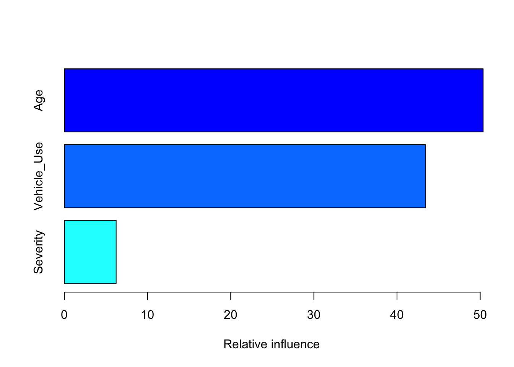

Chapter 6 Model
Build Models
6.1 LM
lm(): In statistics, the term linear model is used for drawing primary associations with a response (dependent variable) and covariate(s) (independent variable(s)) as a regression analysis technique. Source: Wikipedia
Examples:
library(insuranceData)
data("AutoCollision")
head(AutoCollision)## Age Vehicle_Use Severity Claim_Count
## 1 A Pleasure 250.48 21
## 2 A DriveShort 274.78 40
## 3 A DriveLong 244.52 23
## 4 A Business 797.80 5
## 5 B Pleasure 213.71 63
## 6 B DriveShort 298.60 171fit <- lm(Severity ~ Vehicle_Use + Age + Claim_Count, data = AutoCollision)
summary(fit)##
## Call:
## lm(formula = Severity ~ Vehicle_Use + Age + Claim_Count, data = AutoCollision)
##
## Residuals:
## Min 1Q Median 3Q Max
## -130.430 -24.580 -1.353 23.368 274.270
##
## Coefficients:
## Estimate Std. Error t value Pr(>|t|)
## (Intercept) 523.0303 51.1632 10.223 2.18e-09 ***
## Vehicle_UseDriveLong -150.3807 50.6663 -2.968 0.007603 **
## Vehicle_UseDriveShort -198.6347 65.8048 -3.019 0.006786 **
## Vehicle_UsePleasure -184.4265 40.9901 -4.499 0.000219 ***
## AgeB -105.7532 58.6628 -1.803 0.086521 .
## AgeC -128.0870 65.4756 -1.956 0.064546 .
## AgeD -137.4725 68.6554 -2.002 0.058992 .
## AgeE -206.6701 70.2024 -2.944 0.008026 **
## AgeF -195.6402 97.7303 -2.002 0.059052 .
## AgeG -183.3416 85.0540 -2.156 0.043476 *
## AgeH -173.1478 71.6721 -2.416 0.025387 *
## Claim_Count 0.1000 0.1468 0.681 0.503380
## ---
## Signif. codes: 0 '***' 0.001 '**' 0.01 '*' 0.05 '.' 0.1 ' ' 1
##
## Residual standard error: 81.67 on 20 degrees of freedom
## Multiple R-squared: 0.6472, Adjusted R-squared: 0.4532
## F-statistic: 3.336 on 11 and 20 DF, p-value: 0.009379# this is not the best model we could have constructed as the lm assumes the error distribution of the response to be normal (gaussian) - and for a severity model we know that a multiplicative Gamma distribution is more appropriate.6.2 GLM
glm(): In statistics, the generalized linear model (GLM) is a flexible generalization of ordinary linear regression that allows for response variables that have error distribution models other than a normal distribution. The GLM generalizes linear regression by allowing the linear model to be related to the response variable via a link function and by allowing the magnitude of the variance of each measurement to be a function of its predicted value. Source: Wikipedia
Examples:
library(insuranceData)
data("AutoCollision")
fit <- glm(Severity ~ Vehicle_Use + Age + Claim_Count, data = AutoCollision, family = Gamma(link = "inverse"))
summary(fit)##
## Call:
## glm(formula = Severity ~ Vehicle_Use + Age + Claim_Count, family = Gamma(link = "inverse"),
## data = AutoCollision)
##
## Deviance Residuals:
## Min 1Q Median 3Q Max
## -0.36252 -0.07729 0.00388 0.06376 0.23788
##
## Coefficients:
## Estimate Std. Error t value Pr(>|t|)
## (Intercept) 1.576e-03 1.939e-04 8.131 9.07e-08 ***
## Vehicle_UseDriveLong 1.206e-03 2.750e-04 4.388 0.000284 ***
## Vehicle_UseDriveShort 1.752e-03 3.760e-04 4.659 0.000151 ***
## Vehicle_UsePleasure 2.096e-03 2.671e-04 7.847 1.57e-07 ***
## AgeB 7.881e-04 2.954e-04 2.668 0.014762 *
## AgeC 8.927e-04 3.411e-04 2.617 0.016503 *
## AgeD 9.567e-04 3.660e-04 2.614 0.016604 *
## AgeE 2.040e-03 4.331e-04 4.710 0.000134 ***
## AgeF 1.381e-03 5.526e-04 2.500 0.021237 *
## AgeG 1.353e-03 4.600e-04 2.942 0.008068 **
## AgeH 1.395e-03 3.902e-04 3.575 0.001894 **
## Claim_Count -8.694e-08 9.419e-07 -0.092 0.927375
## ---
## Signif. codes: 0 '***' 0.001 '**' 0.01 '*' 0.05 '.' 0.1 ' ' 1
##
## (Dispersion parameter for Gamma family taken to be 0.02045281)
##
## Null deviance: 3.20647 on 31 degrees of freedom
## Residual deviance: 0.42585 on 20 degrees of freedom
## AIC: 335.24
##
## Number of Fisher Scoring iterations: 4r_squared = 1 - ( fit$deviance / fit$df.null ) # psuedo r2 for GLMs
r_squared ## [1] 0.9862631# this model explains much more variance now that the error distribution has been specified correctlyProbability distributions from the exponential family
- Claim Counts: Multiplicative Poisson model forms fit due to the poisson distribution is invariant to meatures of time.
- Frequency: Multiplicative Poisson model forms fit due to the poisson distribution is invariant to meatures of time.
- Severity: Multiplicative Gamma model forms fit because the gamma distribution is invariant to measures of currency.
- Retension and New Business: Binomial with logit model form fits becasue the binomial distribution is invariant to measures of success or failure.
6.3 GBM
Gradient boosting is a machine learning technique for regression and classification problems, which produces a prediction model in the form of an ensemble of weak prediction models, typically decision trees. It builds the model in a stage-wise fashion like other boosting methods do, and it generalizes them by allowing optimization of an arbitrary differentiable loss function. Source: Wikipedia
- Parameter tuning is prudent in machine learning!
Examples:
library(insuranceData)
data("AutoCollision")
library(gbm)
# let's build a a GBM model which combines some weak learners into a strong learner as to boost the predictive power of those variables which contribute the most to the model
fit <- gbm(Claim_Count ~ Vehicle_Use + Age + Severity, data=AutoCollision, distribution = "poisson", n.trees = 50, bag.fraction = 0.8)
summary(fit)
## var rel.inf
## Vehicle_Use Vehicle_Use 47.60538
## Age Age 40.59531
## Severity Severity 11.799316.4 Ensemble learning
In statistics and machine learning, ensemble methods use multiple learning algorithms to obtain better predictive performance than could be obtained from any of the constituent learning algorithms alone. Source: Wikipedia
6.5 Additional Machine Learning Techniques
xgboost: Extreme Gradient Boosting, which is an efficient implementation of gradient boosting framework. This package is its R interface. The package includes efficient linear model solver and tree learning algorithms. The package can automatically do parallel computation on a single machine which could be more than 10 times faster than existing gradient boosting packages. It supports various objective functions, including regression, classification and ranking. The package is made to be extensible, so that users are also allowed to define their own objectives easily.TDboost: A boosted Tweedie compound Poisson model using the gradient boosting. It is capable of fitting a flexible nonlinear Tweedie compound Poisson model (or a gamma model) and capturing interactions among predictors.glmnet: lasso, ridge, elasticnet: Extremely efficient procedures for fitting the entire lasso (least absolute shrinkage and selection operator) or elastic-net regularization path for linear regression, logistic and multinomial regression models, Poisson regression and the Cox model. Two recent additions are the multiple-response Gaussian, and the grouped multinomial. The algorithm uses cyclical coordinate descent in a path-wise fashion.randomForest: Classification and regression based on a forest of trees using random inputs.- K-means / K-mediods: K Means Clustering is an unsupervised learning algorithm that tries to cluster data based on their similarity. Available in the base
statspackage